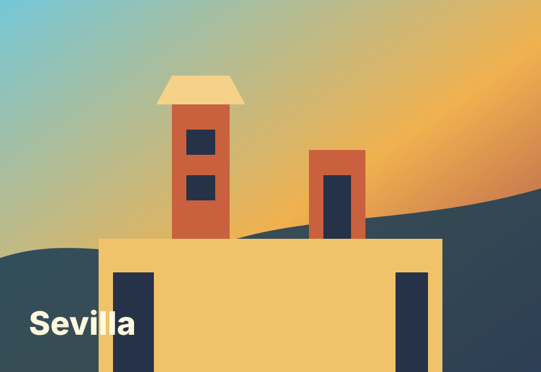
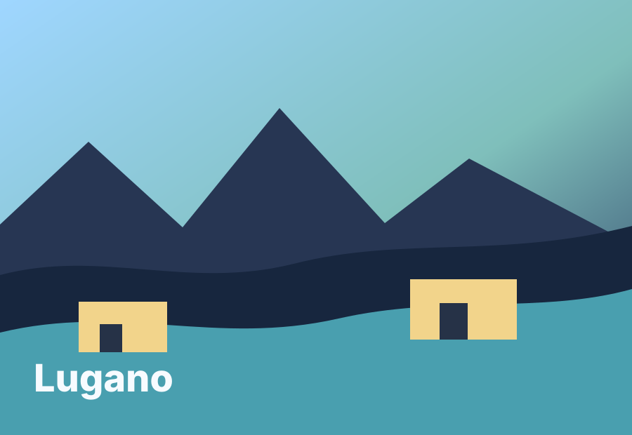

Badajoz
I was born in Badajoz, a city in Extremadura that most people outside Spain have never heard of, which is exactly why it deserves the link. It is the first point on the map.
About me
A small map of the places that shaped me: born in Extremadura, trained in Sevilla, stretched by Milano, and now working from Lugano.
I was born in Badajoz, a city in Extremadura that most people outside Spain have never heard of, which is exactly why it deserves the link. It is the first point on the map.

Sevilla is where I went to university for my Bachelor's and Master's, building the engineering foundations that later pulled me toward AI, telecommunications, and research.
Milano came next through Polimi, where I studied Artificial Intelligence and joined a faster, more international rhythm of computer science and machine learning.

Now I am in Lugano for the PhD chapter, working on AI research at USI and IDSIA while living between mountains, lakes, code, and papers.